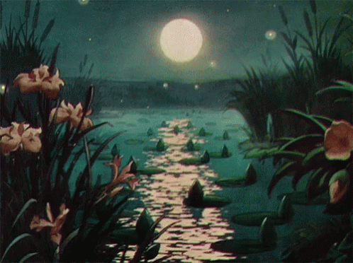
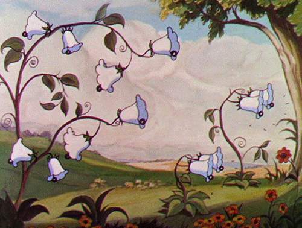
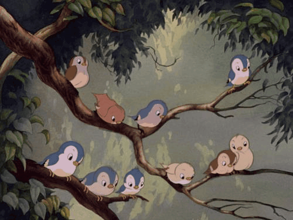

TASK
In this WebQuest, you are going to do an exploration in which you need to learn different types of figurative language, and you will also do an easter eggs hunt by finding and analyzing figurative language in a song. The winners for this hunting exploration are the ones that found the most easter eggs from the song, with a wide and thoughtful interpretation presented in the form of an infographic. You will then present your poster through a video and upload it to your social media so you can show the world the pretty easter eggs you have collected. Now, lets begin our journey!
 